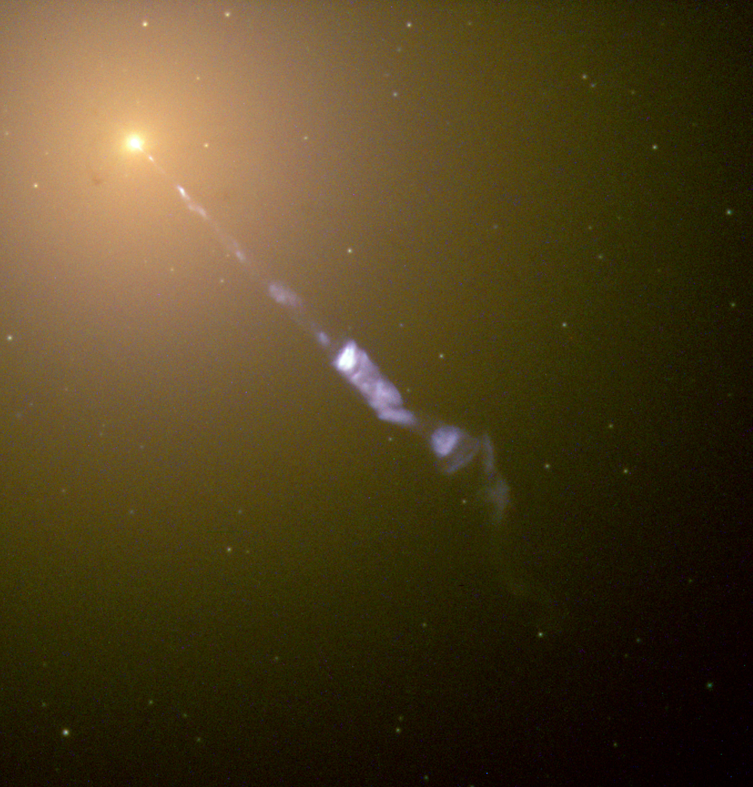

Блаза́р
Блаза́ры — класс внегалактических объектов высокой светимости, активные галактические ядра с релятивистскими джетами, направленными в сторону наблюдателя (менее 20 градусов от луча зрения). Доплеровское усиление светимости и релятивистская аберрация света делают блазар значительно ярче для наблюдателя, чем было бы в случае, если бы джет был направлен в сторону от луча зрения. Как и все квазары, блазары связаны со сверхмассивной чёрной дырой в центре галактики; в случае блазаров эта галактика, как правило, является гигантской эллиптической галактикой[1].
 Активная гигантская эллиптическая галактика M87. Из центра галактики вырывается релятивистская струя
Блазары — одни из самых энергетически мощных явлений во Вселенной, и они являются важным предметом изучения внегалактической астрономии.
Блазары как тип объектов содержат два подтипа:
- лацертиды. Типичный пример, давший название всему подтипу, — BL Ящерицы (BL Lacertae).
- оптически быстропеременные квазары — группа квазаров, которым свойственна высокоамплитудная переменность блеска в оптическом диапазоне (Δ_m_ ≥ 3_m_). Типичный пример — 3C 279. Обычно имеют более сильные эмиссионные линии в оптическом спектре, чем лацертиды, и гораздо более активны в радиодиапазоне.
Название блазаров происходит от обозначения первого изученного представителя этого класса «BL Lac» и «квазар»[2], при этом обыгрывается совпадение с blaze «полыхать, пылать». Название было предложено в 1978 году астрономом Эдвардом Шпигелем (Edward Spiegel).
Объекты этого класса показывают переменность блеска на различных длинах волн и временных масштабах от часов до десятков лет, обнаруживают высокую (до 10 %) и переменную линейную поляризацию излучения во всех диапазонах спектра (до 10 %)[2]. Благодаря направленности джета на наблюдателя и высокой скорости плазмы в джете (95—99% скорости света), вблизи ядра блазаров наблюдаются кажущиеся сверхсветовые движения.